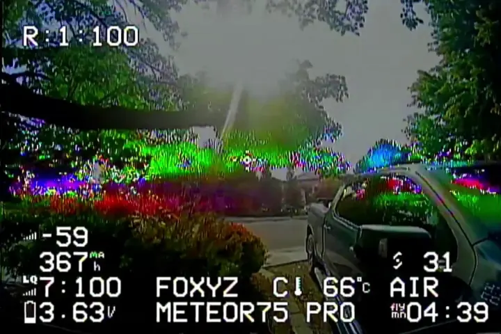
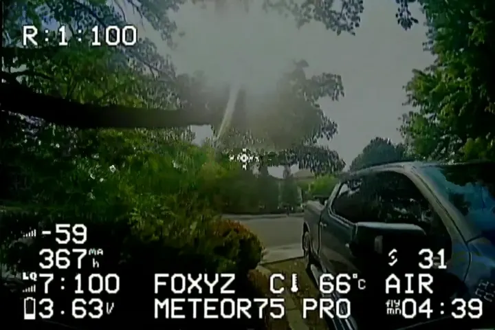
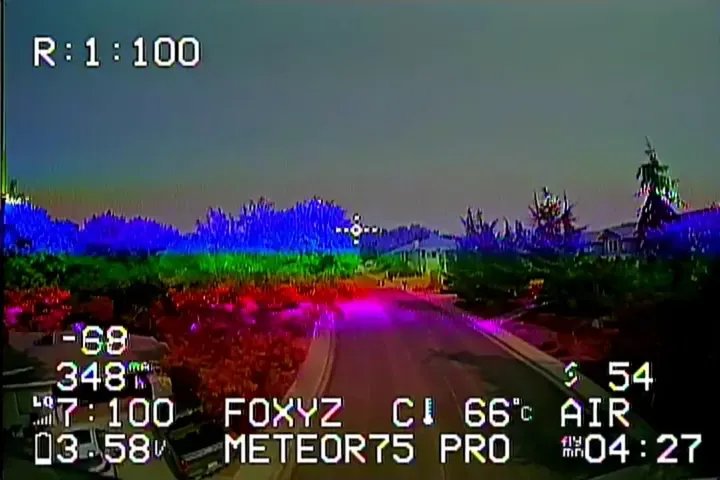
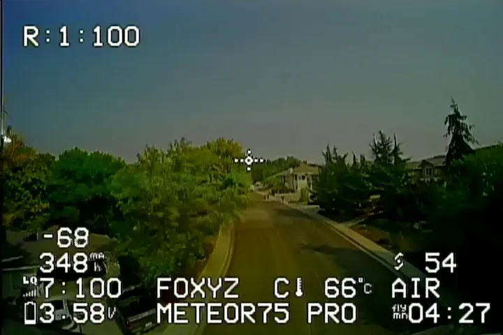

Rainbow streaks and color tears
The Machine learning engine rebuilds each frame from its neighbours, so the streak disappears instead of being blurred over.
For analog and HDZero DVR · Windows and Mac
DVR Doctor removes rainbow streaks, color tears and HDZero breakup from footage you've already recorded. It rebuilds each broken frame from the frames around it, and keeps your audio.


Cleaned Original DVRWhat it fixes
The Machine learning engine rebuilds each frame from its neighbours, so the streak disappears instead of being blurred over.
Finds the scrambled 8×8 blocks and bands when the signal drops and rebuilds them from nearby frames. Your OSD stays as it is.
Runs on your graphics chip or all CPU cores. On an older laptop, the Manual engine gives you sliders and profiles instead.


Cleaned Original DVRVideo or a single still, straight from your goggles' SD card.
Machine learning for the best result, Manual for slower computers.
Same length, same audio, ready for YouTube or your group chat.
From pilots who bought it
“I just tried it on a full length edited video I made months ago and it came out much cleaner and way more crisp than I thought!”
“I tested it and it works extremely well.”
“I’m into FPV since 6 years now, what you’ve done is awesome for the community.”
Pricing
One key per computer. Reinstalls and updates are free.
$4.99 one-time
$7.99 one-time
The free trial cleans the first 30 seconds of any clip and saves it at 720×480 with a watermark. No key, no card.
Try the free version on your own clip first. If you're still not happy after buying, you get a full refund within 14 days of purchase.
Your key binds to the first computer you activate it on and keeps working there through reinstalls and updates. To move it, open DVR Doctor on the old computer and choose Menu → Change license key. Old computer gone? Message us on Discord and we'll move it.
Activate it within 30 days of buying, then it's yours for good, even when you move computers.
Everything in Standard, plus OSD removal (remove, move or add on-screen display text), 2× AI upscaling and the online cleaner. The highlights extractor will be added free when it's out. If you bought before Pro existed, your key already counts as Pro.
Depending on where you live, the store may add VAT or sales tax at checkout. It shows you the total before you pay.
Analog and HDZero DVR recordings at any aspect ratio and resolution, plus single stills.
Yes, on Apple Silicon Macs (M1 or newer) with macOS 13.4 or later.
Yes, with a Pro key. The online cleaner runs in your browser and handles analog clips up to 30 seconds at 540p. The video never leaves your device.
Made by two FPV pilots, okyproxd and foxyonfireyt. Bugs and requests go straight to us on Discord.
14-day money-back guarantee · One-time payment